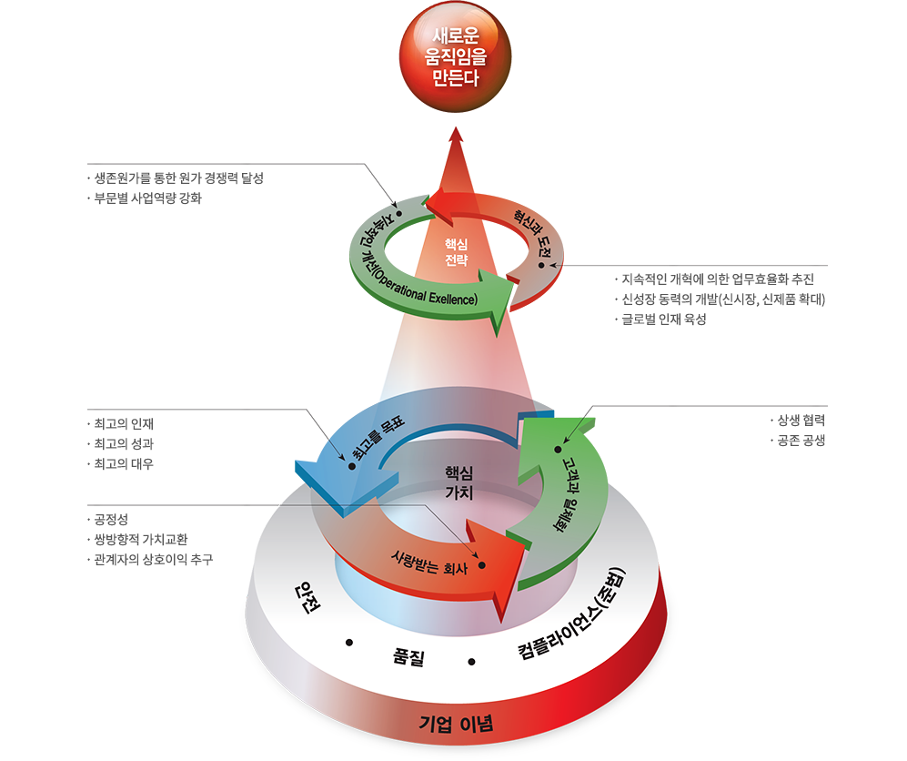

회사소개
비전
한국NSK는 베어링 산업의 미래가치를 창출하기 위해 끊임없는 외적 성장과 내적 혁신을 이루어 왔습니다.
세계 최고의 기업을 향한 미래의 꿈을 품고, 고객과 기업, 사회 구성원 모두가 더 나은 미래의 결실을 함께 공유하는 그날까지, 한국NSK의 변화와 도전은 계속될 것입니다.
한국 NSK의 30년 발자취
1987년, 한국NSK는 한화기계와 일본의 NSK가 합작 투자해 만든 베어링 생산 전문 기업으로 출발했습니다. 설립 당시 수입에만 의존하던 소경정밀베어링을 국산화해 국익 창출과 기술 혁신을 이루는 등 괄목할 만한 성장을 나타냈습니다. 한국NSK는 1997년 IMF 이후 한화기계가 회사 지분 절반을 NSK에 매각하면서 NSK의 자회사가 되면서 또 다른 변화를 맞이했다. 국내를 넘어 세계적 베어링 생산 전문기업으로 도약하 는 발판을 마련한 것입니다. 어느덧 창립 30주년을 맞이한 한국NSK의 어제와 오늘의 발자취 입니다.
| 2017.10 | 천안공장 준공식 |
| 09 | 창립30주년 |
| 02 | 천안공장 준공 |
| 2016.02 | 천안공장 착공 |
| 2015.05 | 충남도-NSK 투자 협약 체결 |
| 2012.12 | Tapered Roller Bearing, Cage&Roller Bearing 생산개시 |
| 09 | 제3공장동 준공 |
| 2011.06 | 한국기술센터(KTC) 신축 및 확장 이전 |
| 04 | 양산물류센터 확장 이전 |
| 2010.09 | Linear Guide 생산 게시 |
| 2007.09 | 창립20주년 |
| 2006.04 | 생산설비 Overhaul 개시 |
| 03 | Compressor Needle Bearing 생산개시 |
| 2005.06 | ISO/TS16949 인증 획득 (DNV) |
| 2004.03 | Water Pump Bearing 생산개시 |
| 2002.03 | 한국기술센터(KTC) 개소 |
| 2001.04 | 노사단합 체육대회 개최 |
| 03 | 창원공장 내 베어링기술센터 개소 |
| 2000.05 | 일반 깊은홈 Ball Bearing 생산개시 |
| 1999.12 | QS-9000인증 (DNV) |
| 1998.03 | 한국NSK주식회사로 사명변경(NSK 100%) |
| 01 | NSK 50% 지분 인수(NSK 100%) |
| 1997.12 | ISO-14001인증 (KSA/QA) |
| 09 | 창립10주년 |
| 품질경쟁력최우수 100대 기업선정 | |
| 1996.05 | ISO-9002인증 (DNV) |
| 1995.09 | 제2공장동 준공 |
| 복열 Ball Bearing 생산개시 | |
| 1994.07 | 생산성대상 국무총리상 수상 |
| 1993.11 | Needle Roller Bearing 생산개시 |
| 1989.03 | 창원공장 준공 생산 개시 |
| 1987.09 | 한국정밀주식회사 설립(NSK 50%) |
NSK는 1916 년 창업 이래 100 년 동안 항상 새로운 기술의 추구와 품질 향상에 주력해 왔습니다. 베어링과 자동차 부품, 정밀 기계 제품 등 각 제품 분야에서 세계를 선도하는 NSK의 기술 기반이되고있는 것은 “마찰”, “재료 기술”, “분석 기술”, “메커 트로닉스 기술”로 구성된 4 개의 핵심 기술입니다. 4 코어 기술을 바탕으로 만들어진 제품은 세계 모든 산업의 발전과 국민의 풍요로운 삶에 기여하고 있습니다. NSK는 첨단 기술 개발에 착수, 시장의 요구에 맞는 고기능, 고품질의 제품을 지속적으로 제공할 것입니다.
한국 NSK의 강점
조직도